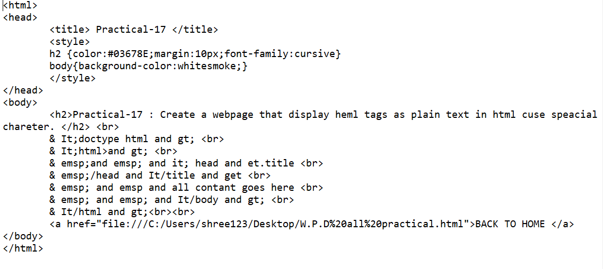

Practical-17 : Create a webpage that display heml tags as plain text in html cuse speacial chareter.

OUTPUT :
& It;doctype html and gt;
& It;html>and gt;
& emsp;and emsp; and it; head and et.title
& emsp;/head and It/title and get
& emsp; and emsp and all contant goes here
& emsp; and emsp; and It/body and gt;
& It/html and gt;
BACK TO HOME